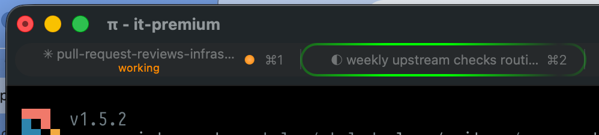

Working
An orange dot and a live tool detail tell you what’s happening, from reading a file to running a command.
bash: git status #ff9500
Stop checking every tab. Know when Pi is working, needs your input, or is ready for what’s next. Right where you already look.
One session or a whole row of tabs. The important part is always visible.
An orange dot and a live tool detail tell you what’s happening, from reading a file to running a command.
A blue dot signals that it’s your turn. See when Pi needs an answer, an approval, or a little direction.
A green dot means ready. The label dims to gray and the tool detail clears, keeping finished sessions quiet.

Small signals, built on iTerm2’s own capabilities. Not another window to keep open.
Direct OSC 21337 sequences pair with asynchronous it2 session set-status updates to iTerm2’s session database. The native CLI targets the exact session ID.
Indeterminate tab and Dock progress via OSC 9;4 while Pi works. An attention state when input is needed. Automatically cleared when the turn completes.
Native iTerm2 desktop notifications via OSC 9 when a task takes more than four seconds to finish, or when Pi needs your attention.
Automatic tmux and screen passthrough for terminal control sequences. Inspect, preview, or clear the integration with simple slash commands, without leaving Pi.
Install as a Pi package, reload your session, and let your terminal do the talking.
$ pi install git:github.com/mprokopov/pi-iterm2Then run /reload in Pi, or restart your session.
/iterm2Inspect integration status/iterm2 testPreview the status indicators/iterm2 clearClear custom tab statusesLess tab checking. More getting things done.
Explore on GitHub ↗